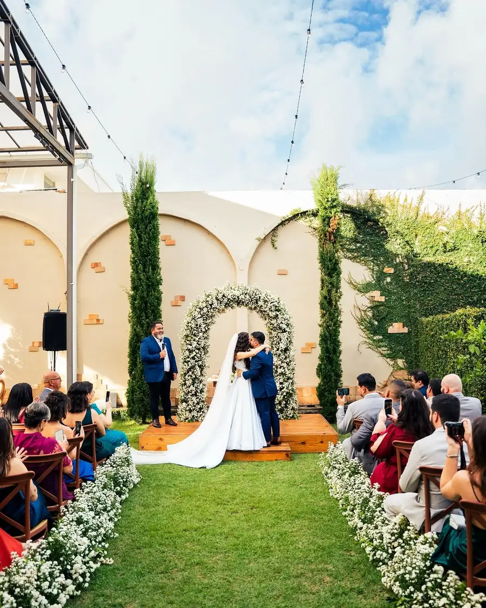
Mini wedding
Cerimônia no jardim e festa na mesma casa, com decoração, buffet e organização no pacote Case em Casa. A partir de 40 convidados.
Ver o pacoteMini weddings, aniversários, formaturas e eventos de empresa numa casa com jardim, arcadas de tijolo e ciprestes.
4,5 no Google, em 107 avaliações
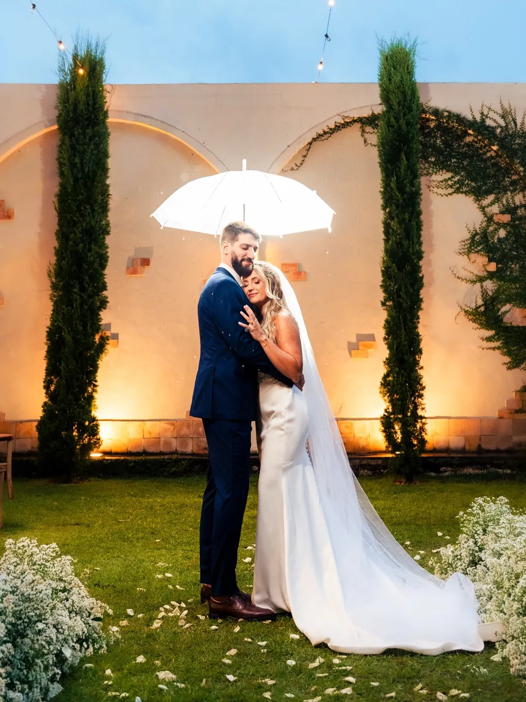
O jardim ao entardecer
Uma casa inspirada nas vilas italianas, com jardim, arcadas de tijolo e ciprestes. Porque o amor não se mede pelo número de convidados, mas pela intensidade de cada momento.
Um passeio antes da visita: o jardim montado, as mesas e a chegada pela fonte.
Eventos

Cerimônia no jardim e festa na mesma casa, com decoração, buffet e organização no pacote Case em Casa. A partir de 40 convidados.
Ver o pacote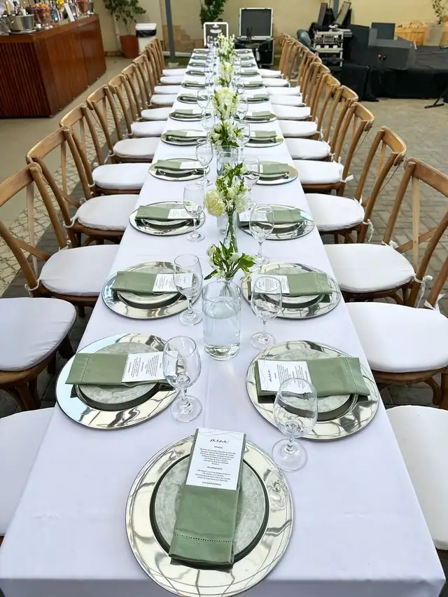
Casou na igreja? A festa dos convidados pode ser aqui.
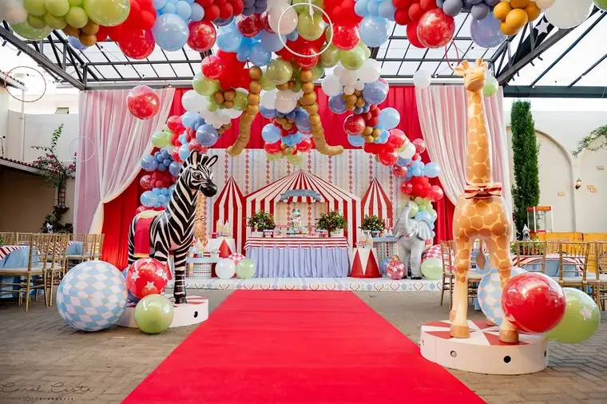
Do primeiro aninho aos 44 anos com aula de ritmos e café da manhã.
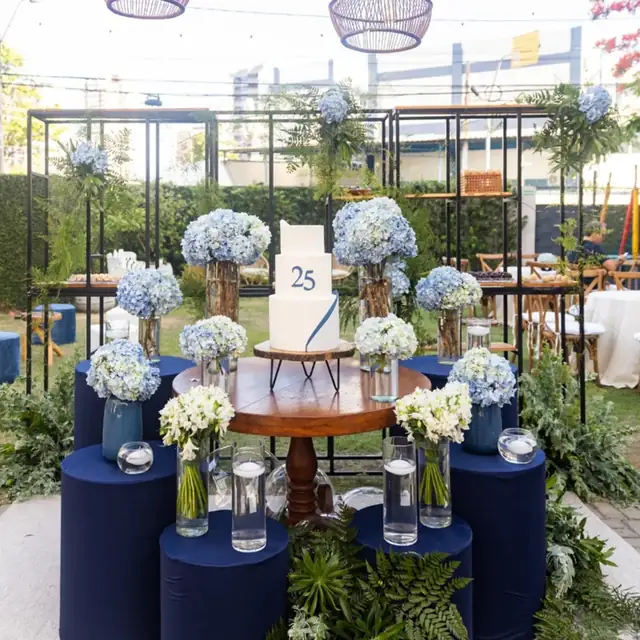
Festa intimista, com banda e bar de drinks.
Confraternização com palco e forró ao vivo.
Uma casa de dois andares, com jardim, pátio coberto e varanda. Cada ambiente tem o seu papel no dia.
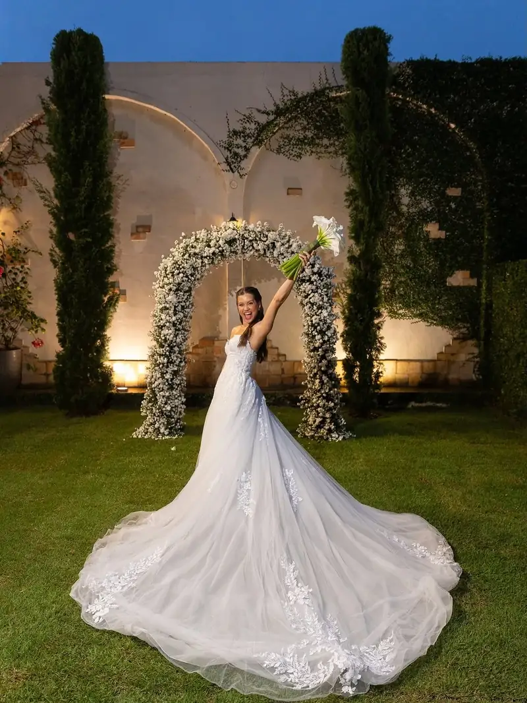
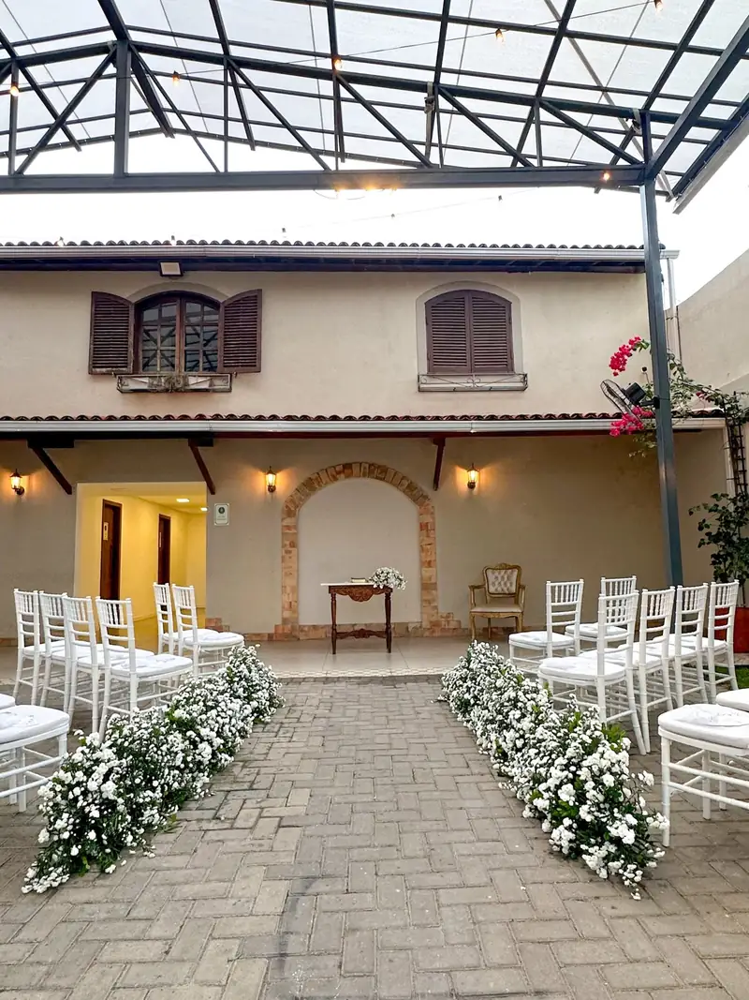
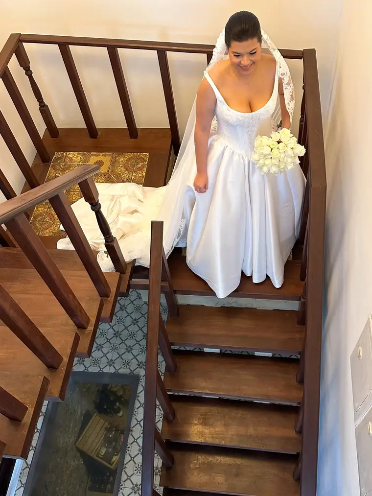
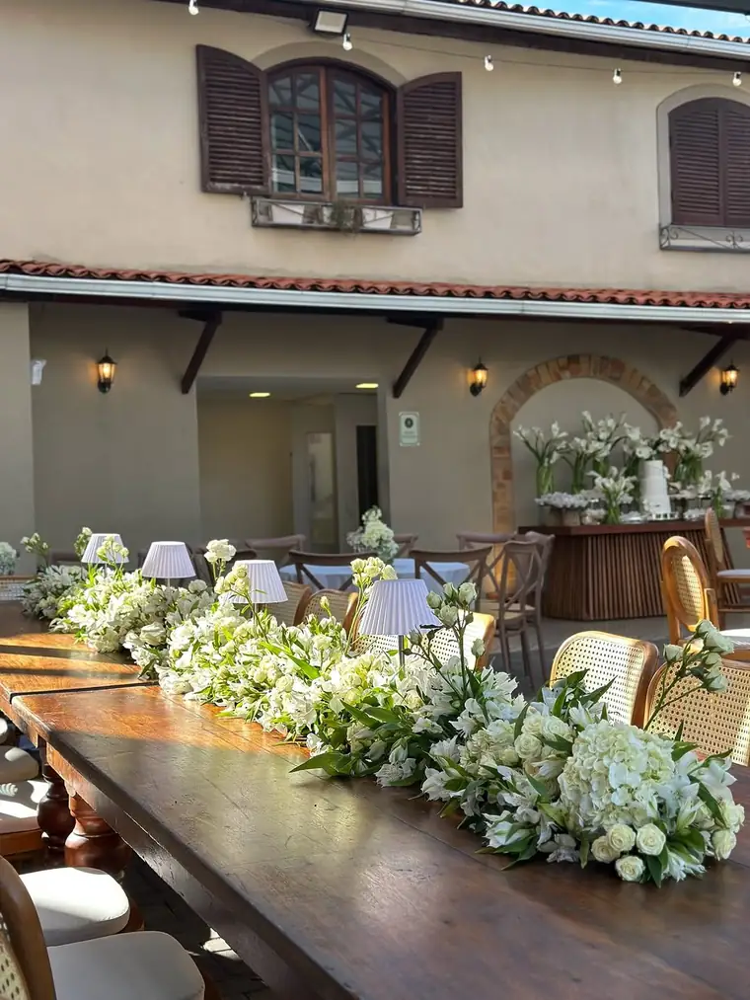
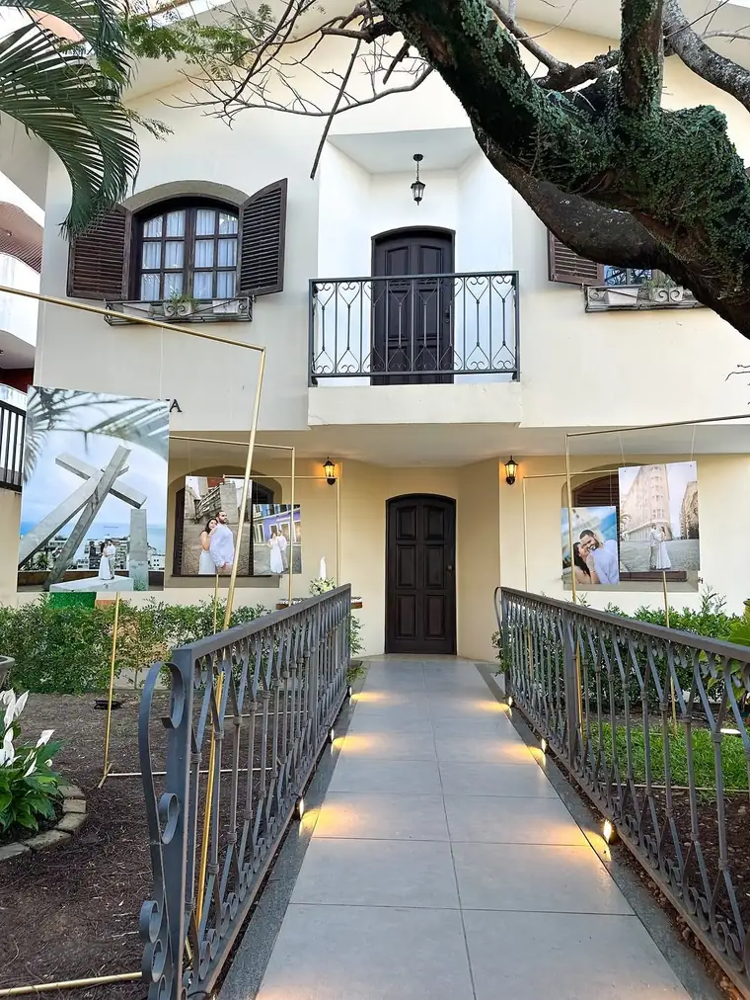
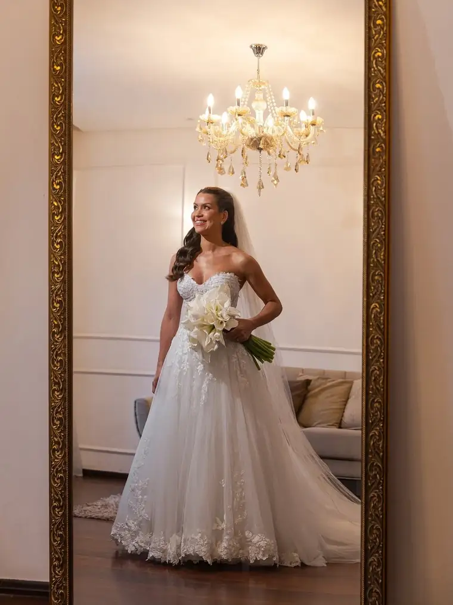
Pacote
O mini wedding com tudo resolvido num lugar só. As datas para 2026 e 2027 são limitadas.
Casa Verona
mini wedding
a partir de 40 convidados
[FALTA: valor de partida do Case em Casa]valor a definir com vocês
[FALTA: o que entra em cada item]detalhe de cada item a definir
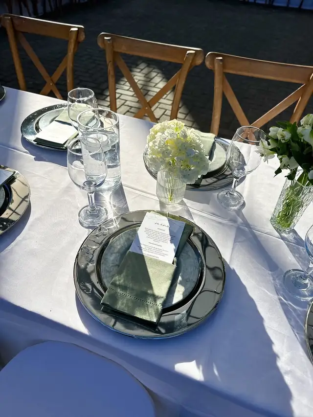
Aniversário, formatura, evento de empresa e casamento com os seus fornecedores.
[FALTA: formato e valor dos outros eventos, e se a casa aluga só o espaço]formato e valor a definir
Contar o que você está planejandoTipo de evento, mês e quantos convidados. O pedido chega direto no WhatsApp da casa.
A visita é na própria casa, na Alameda Verona, 56. [FALTA: dias e horários de visita]Horários a combinar.
Com a data e o formato definidos, a casa monta a proposta. [FALTA: como funciona a reserva da data]Reserva da data a definir.
Conhecemos o espaço quando ainda estava em reforma. A Casa Verona não tinha inaugurado e Patrícia, a dona e responsável pela casa, mesmo receosa nos recebeu de coração aberto. Foi amor à primeira vista (…)
A casa Verona é um espaço singular em Salvador. Clima intimista e o verde que deixa qualquer foto perfeita.
(…) Conseguimos reproduzir exatamente o casamento italiano que desejávamos! Foi lindo! A Patricia, proprietária da casa, foi muito atenciosa, sempre!
Vivemos um dia único e muito especial na casa Verona! Nos casamos em janeiro desse ano, mas fechamos com Pati em agosto de 2022. (…)
4,5 de 5 em 107 avaliações no Google. Ler as avaliações
Preencha o que já souber. O pedido abre no WhatsApp da casa com a mensagem pronta.
Depende do formato, da data e do número de convidados. O Case em Casa parte de [FALTA: valor de partida]um valor que a gente te passa na visita.
[FALTA: capacidade máxima]Capacidade a confirmar. Já recebemos mini wedding de 120 convidados.
Decoração, buffet e a organização do dia, com a cerimônia e a festa na casa. [FALTA: o que entra em cada item]O detalhe de cada item a gente mostra na visita.
[FALTA: se a casa aluga só o espaço, e como funciona]A confirmar com a casa.
Pode. O altar é montado no jardim, entre as arcadas e os ciprestes, e a festa segue na mesma casa.
A casa tem pátio coberto. [FALTA: como fica a cerimônia se chover]O plano pra chuva a gente mostra na visita.